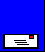

Предишна , Съдържание
Хипервръзките са едно от най-важните свойства на WEB страниците. В зависимост от това дали те сочат в рамките на текущия документ или извън него връзките биват вътрешни и външни.
Вътрешните хипервръзки са връзки към ключови думи в рамките на документа. По този начин може да се създаде съдържание в началото на документа, в което с помощта на хипервръзки се осъществява преход към съответния текст, например: Хипервръзки Етикетът за задаване на връзка има следния формат:<A HREF=#>text</A>
HTTP://www.acad.bg e връзка към друг сървер.Пъзел Хипервръзки могат да се използуват и за установяване на връзка с e-mail адрес по следния начин: anachkov@unwe.acad.bg
Форматиране e връзка към страница на текущия компютър.
Преходът към ключова дума във външен документ се осъществява чрез следния формат на етикета <A HREF="име_на_файл.htm#ключова_дума">ключова_дума<>.
Посочете ваш файл с ключова дума от него.
Като хипервръзки могат да се използуват и картинки. Етикетът за хипервръзка с картинка има следния формат: <a href="html4.htm"><img src="hyperpic.gif"></a;></p>
а самата връзка изглежда така: 
Начало , Предишна , Съдържание
© Людмил Аначков , доц. д.и.н. Ангел Марчев
Последна редакция: 13 Октомври 2006